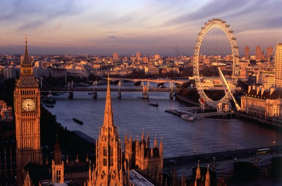

Bali là hòn đảo du lịch nổi tiếng nhất Indonesia. Đảo được mệnh danh là đảo thiên đường với rất nhiều thắng cảnh, đền, đài và các bãi biển đẹp thơ mộng. Ngoài ra, ở Bali còn có nền văn hóa, nghệ thuật lâu đời rất đặc sắc của người dân bản địa. Nếu có dịp đến Bali, bạn nên ghé thăm các đền, chùa, tham gia các hoạt động lặn biển, chèo thuyền vượt thác, leo núi lửa,…Hoặc đi thăm khu rừng khỉ Monkey Forest, ruộng lúa bậng thang,…rất thú vị.

London nổi tiếng với cung điện Bukingham, chợ Camden, và các đồ trang sức được làm bằng ngọc trai quý hiếm. Ở London có sự giao thoa, kết hợp giữa nghệ thuật, thời trang, ẩm thực và vị bia truyền thống bản địa (gọi là ale). Nếu bạn là 1 người thích tìm hiểu về văn hóa thì không nên bỏ lỡ Tate Modern và nhà hát hoàng gia (Royal Opera House). Nếu bạn yêu thích thời trang thì Oxford Street là khu mua sắm thích hợp. Với những bạn sành ăn thì nên thử qua trà kem ở Harrod’s hoặc cá và khoai tây chiên giòn từ các cửa hàng fish & chips có ở khắp nơi (gọi là chippy)

Dubai thuộc các Tiểu Vương quốc Ả Rập Thống Nhất (UAE). Thành phố này được biết đến như 1 điểm đến du lịch xa hoa và đẳng cấp nhất thế giới. Ở Dubai có sự kết hợp giữa nền văn hóa hiện đại với bề dày lịch sử phong phú.
Nếu có dịp đến Dubai, bạn đừng bỏ lỡ cơ hội ngắm thành phố từ trên đỉnh tòa nhà cao nhất thế giới Burj Khalifa. Tham quan đảo nhân tạo hình lá cọ Palm Jumeirah. Hoặc ghé thăm Bastkia Quarter nằm giữa Dubai Creek và Bur Dubai để tìm hiểu về văn hóa truyền thống của Dubai. Chiêm ngưỡng thánh đường Hồi giáo Sheikh Zayed được mạ vàng ròng hoặc khách sạn 7 sao đắt nhất thế giới – Emirates Palace.

Rome (hay Roma) là thủ đô nước Ý với bề dày lịch sử hơn 2500 năm phong phú. Rome còn là biểu tượng của nước Ý với rất nhiều danh lam thắng cảnh nổi tiếng như đài phun nước Trevi, đấu trường La mã Colosseum, đền Pantheon, quãng trường Venice, Navona, Numa, bảo tàng Vatican và rất nhiều bảo tàng khác nữa.
Thành phố này còn nổi tiếng với các khu chợ ngoài trời, quãng trường và các đài phun nước. Bạn có thể thưởng thức hương vị cafe espresso và gelato hoặc mua sắm tại Campo de’Fiori hoặc Via Veneto. Thưởng thức món kem Ý, bánh Pizza, mì spaghetti và còn rất nhiều điều thú vị khác nữa.

Paris còn được biết đến như thủ đô hoa lệ, kinh đô ánh sáng với rất nhiều địa điểm vui chơi, giải trí hấp dẫn. Biểu tượng của thủ đô Paris nước Pháp là tháp Eiffel và Khải hoàn môn (Arc de Triomphe). Ngoài ra bạn cũng có thể ghé thăm bảo tàng nghệ thuật, lịch sử Louvre và nhà thờ Đức bà Paris nổi tiếng (Notre Dame). Nếu là tín đồ ăn uống, bạn có thể ghé thăm chợ Marché Biologique Raspail và mua sắm tại chợ Marché aux Puces de Montreuil.
Hà Nội từ lâu đã được biết đến là thủ đô nghìn năm văn hiến của Việt Nam. Hà Nội nổi tiếng với hơn 600 ngôi đền chùa hàng trăm năm. Ngoài ra, khu phố cổ 36 phố phường sẽ làm nức lòng bất cứ du khách nào đến đây. Không chỉ có vẻ đẹp cổ kính, Hà Nội còn thu hút khách du lịch với vẻ đẹp hiện đại của 1 thủ đô sôi động bậc nhất Châu Á.